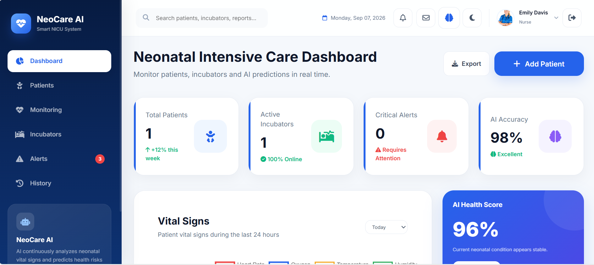
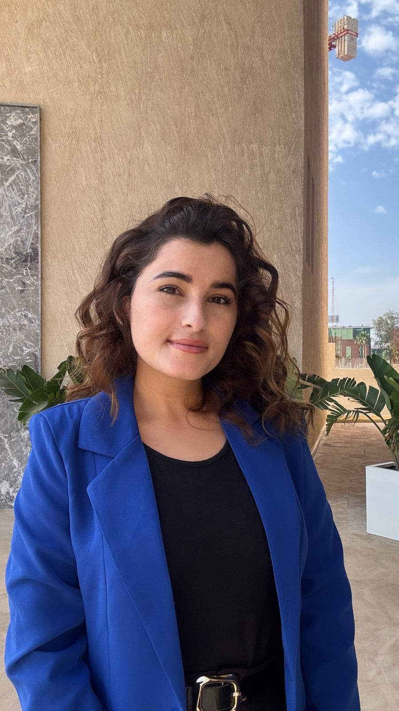
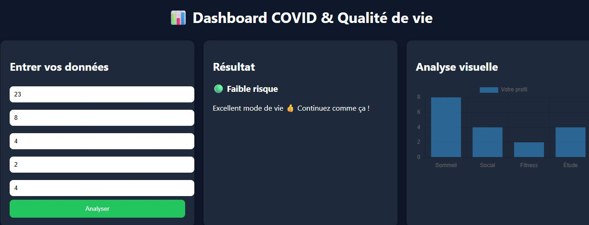
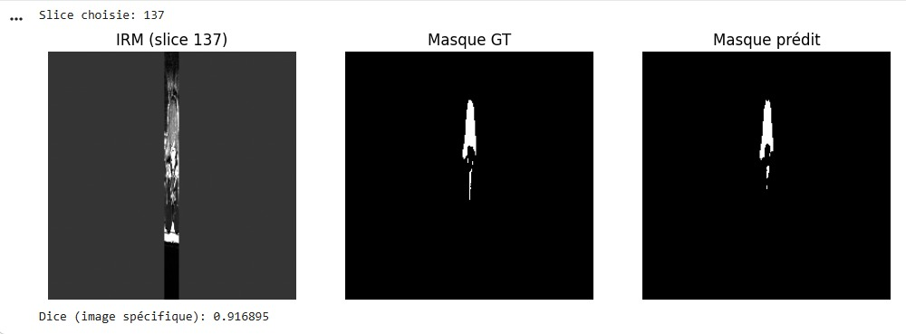
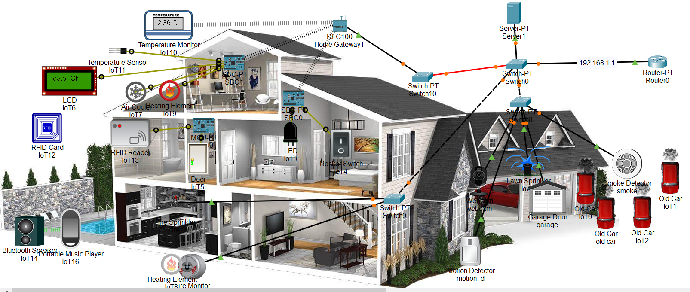
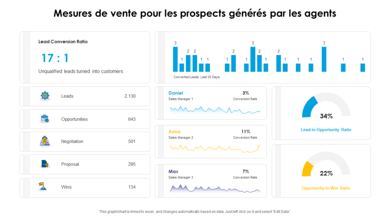
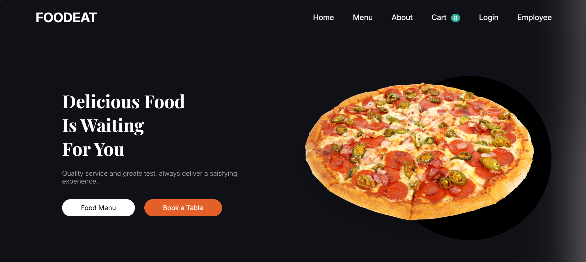

Couveuse intelligente
Développement d'une plateforme web pour une couveuse intelligente basée sur l'Intelligence Artificielle.
Passionnée par l'intelligence artificielle, la Data Science, le développement web et les technologies numériques appliquées à la santé.

Je suis étudiante en troisième année du cycle ingénieur en Génie Digital et Intelligence Artificielle en Santé.
Mon parcours combine l'ingénierie informatique, le développement logiciel, les systèmes et réseaux, la Data Science et l'Intelligence Artificielle.
Je m'intéresse particulièrement aux technologies numériques appliquées au domaine de la santé, notamment à l'intelligence artificielle, aux données médicales et aux technologies biomédicales.
Je participe également à la formation des étudiants, ce qui me permet de développer mes compétences en communication, pédagogie et transmission des connaissances.
Cycle ingénieur en Génie Digital et Intelligence Artificielle en Santé.
Machine Learning, Deep Learning et Intelligence Artificielle.
Développement web, Python, PHP, Django et React.
Technologies numériques appliquées à la santé et systèmes biomédicaux.
Génie Digital et Intelligence Artificielle en Santé
SUPTECH SANTE — MohammadiaSystème informatique
École Supérieure de Management, de Télécommunication et d'InformatiqueAdministrateur des Systèmes et Réseaux Informatiques
Université Sultan Moulay Slimane — KhénifraSciences Expérimentales — Option Physique-Chimie
Lycée Phosphate — KhouribgaDéveloppement d'une plateforme web pour une couveuse intelligente basée sur l'Intelligence Artificielle.
Développement d'un système intelligent de mesure de la fréquence cardiaque.
Projet de fin d'études portant sur la conception d'un réseau centralisé pour la gestion des retours.
Stage d'initiation au sein du service informatique.

Développement d'une plateforme web pour une couveuse intelligente basée sur l'Intelligence Artificielle.

Analyse de données liées à la COVID-19, à la mobilité et aux habitudes de vie. Comparaison de plusieurs modèles de Machine Learning et développement d'un dashboard interactif.

Approche basée sur le Deep Learning et les réseaux CNN pour la détection automatisée d'anomalies discales à partir d'images médicales.

Conception d'une solution intégrée de gestion intelligente d'une maison permettant l'automatisation et le contrôle de différentes fonctionnalités.

Utilisation de Python pour nettoyer, organiser et analyser des données, identifier des tendances et créer des visualisations claires.

Conception d'une interface web moderne dédiée à la restauration, avec présentation du menu, navigation utilisateur, panier, connexion et espace employé.
Mes coordonnées professionnelles